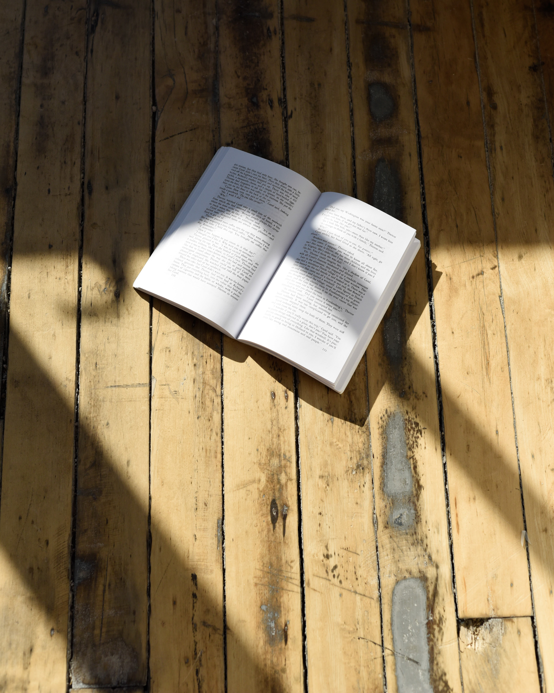
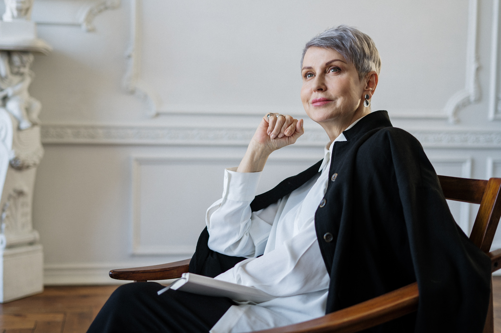

Transformamos a la sociedad desde el núcleo familiar
Acoger al grupo familiar y apoyarlos en procesos educativos, religiosos, morales, económicos para que logren superar obstáculos derivado de sus condiciones vulnerables y surjan a una sociedad preparados para superar las diferentes condiciones de la sociedad actual.
La fundación YURY ANDREA SALCEDO PACACIRA va orientada a la ayuda y el apoyo al grupo familiar completo apoyando en forma religiosa, educativa, alimentaria y económica y a todos los integrantes de nuestra fundación a surgir con respeto y educación a una sociedad actual a dar su ejemplo de que con amor y apoyo se logran grandes cambios generando objetivos de desarrollo social y económico.
Es una fundación formada para apoyar el desarrollo integral y superar las distintas problemáticas que tiene una familia, ya sea causada por la pobreza extrema, por el desplazamiento forzado, la salud, educación, laboral y familiar.
NUESTRA HISTORIA
Inspirada en el desarrollo y la educacion de las familias más necesitadas, con el fin de lograr mejoras en su calidad de vida y la de sus integrantes.
La familia son la base de una sociedad educada y progresiva inspirada en obtener los mejores recursos y grandes aportes para una gran sociedad.
UN EJEMPLO DE PADRE, Y UNA EXCELENTE MADRE,
SON LAS BASES DE UN GRAN HOGAR,
Y SUS HIJOS SERAN,
EL FUTURO DE NUESTRA SOCIEDAD,
Y UNA GRAN COLOMBIA SERA.
¡¡APOYEMOS MEJORANDO LA
VIDA DE OTROS!!
EQUIPO DE TRABAJO
Un gran equipo con sentido de pertenencia y conciencia social

FUNDADORA
NOMBRE DE LA PERSONA
Breve reseña
FUNDADOR
NOMBRE DE LA PERSONA
Breve reseña de la persona

PSICOLOGA
NOMBRE DE LA PSICOLOGA
breve reseña de la persona